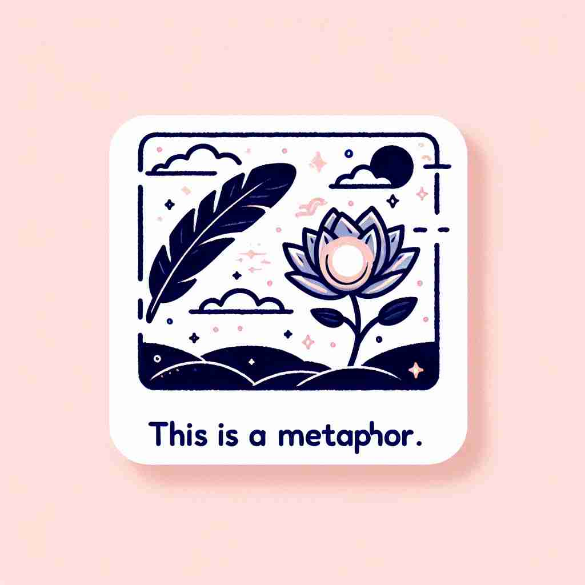

💬 The lotus is a metaphor for life and its challenges.

💬 In literature, light is often used as a metaphor for knowledge.
💬 The colorful tree is a metaphor for life and its many paths.
🔈 ['metəfə][-fɔː]
🗝️ n. a figure of speech in which a word or phrase is used to describe something else, suggesting a similarity
🖼️ 在一个热闹的文学课堂上，老师正在解释文学手法。她写下'她的笑声是阳光'在黑板上，并问学生这是什么意思。一名学生回答：'这意味着她的笑声像阳光一样温暖和愉悦。'这个场景展示了'metaphor'作为一种修辞手法，通过相似性描述某事物的含义。
🔍 'Metaphor' 源自希腊语 'metaphora'，意为 '转移'。核心含义是在语言中将一个概念转移到另一个概念上，以表达相似性。这种 '转移' 的思想扩展到了语言之外，使 'metaphor' 可以指代任何具有象征意义的事物。记忆时，可以想象将一个概念的特质 '转移' 到另一个概念上，这种 '转移' 就是 metaphor 的本质。
💬 The lotus is a metaphor for life and its challenges.
💬 In literature, light is often used as a metaphor for knowledge.
💬 The colorful tree is a metaphor for life and its many paths.
🌳 由词根 "meta-"（变换、超越）和 "-phor"（带来、载运）组成，表示一种修辞手法，通过将一个事物转变成另一个事物来表述，即 "隐喻"。
💡 记忆 "metaphor" 时，可以联想为 "meta"（超越）+"phor"（携带），即通过改变一种事物的面貌将其含义带给另一个事物。通过这个联系，可以帮助记住它作为修辞手法的意义。
🗝️ n. something that represents or symbolizes something else
🖼️ 在一个美术展览中，一幅画展示了一只飞翔的鸟，旁边写着'自由'。参观者们聚集在画前，讨论这幅作品。一位参观者说道：'这只鸟是一种象征，自由的metaphor。'这个场景展示了'metaphor'作为象征意义的含义。
💬 The butterfly is often used as a metaphor for transformation.
❓ 扩展了语言范畴，用于表示任何象征性的事物
🗝️ n. a thing regarded as representative or symbolic of something else
🖼️ 在一个社区活动中，主办方用一个破旧的船作为主题装饰。活动主持人向大家解释：'这艘破船是一种metaphor，代表我们社区战胜困难后重新启航的决心。'这个场景展示了'metaphor'作为象征或代表某事物的含义。
💬 The old factory became a metaphor for the town's economic decline.
❓ 进一步扩展到非语言领域，用于描述具有象征意义的实物或概念